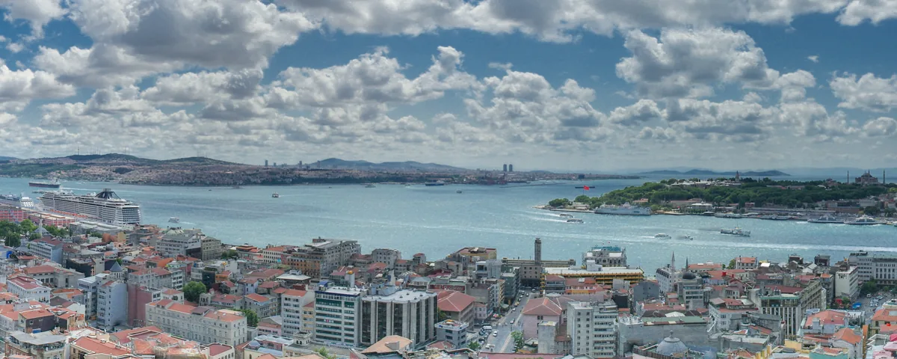

GOEKSPLO · WORLDWIDE BATCH 1 · 23 OCTOBER 2026
Four guides. Three photographs. Your review.
Each panel shows the exact proposed desktop hero, mobile hero and card framing. Open the full guide preview to read the actual shared layout and its two-night outline; both exact itinerary templates are also available below. Historical photographs illustrate the place, not current access, weather or availability.
EXISTING APPROVED IMAGE · UNCHANGED
Istanbul
Added the palace operator and Tuesday-closure reminder; simplified T1 guidance. Kept separate worship/sightseeing access and the existing approved photograph.

Identity, source and reuse
Existing approved Istanbul identity mapping and locked hero/card selections.
Tolga Tüfekçi · Wikimedia Commons · CC BY-SA 4.0 · cropped and resized to WebP; cropped for display
Individual Commons file and photographer · CC BY-SA 4.0

Photographed: existing approved record. Exact approved asset, original crop, responsive bytes, focal point and licences preserved. This page does not create another approval.
Credit the photographer and source, link the licence, state the resizing/cropping, and distribute modified image files under the selected CC BY-SA licence. No endorsement is implied. No generated additions or object removal.


Exact draft, sources and approval pin
English v3 JSON · Source-to-claim evidence · Readable exact copy and day-by-day templates
Content digest: 38c5b7cba0da08071cec15914efa70554251336666d23a05948d7d67d14e6106
Identity digest: 6b9bc3d0e8245bae02ca2df568391dd56cdf82ec26a62b3723e45bb755e8f5ea
Evidence digest: 056ae3eba19f652b624c1c58cbdb1579745b261604d4371f43ab084b7720fc88
Editorial assessment: PASS for owner review. Approval: pending; reviewer and reviewed date are unset. Recheck closure/works notes by 6 November 2026 and before publication; other periodic guidance by 21 January 2027.
NEW CANDIDATE · NOT APPROVED
Barcelona
Made MNAC’s collection and Montjuïc location specific; added Monday museum caveats; retained current Park Güell works checks. Planning-target defect remains a separate integration blocker.
Before publication: correct the shared service’s missing Barcelona planning target. The preview intentionally shows the current generic action rather than inventing a working target.

Identity, source and reuse
The entrance pavilions at Park Güell, Barcelona, Spain. The individual file description, camera location and visible buildings agree. This is a 2009 photograph, not evidence of current works or access.
Bernard Gagnon / Wikimedia Commons / CC BY-SA 3.0 · resized to WebP; cropped for display
Individual Commons file and photographer · CC BY-SA 3.0 · source revision 1215789678

Photographed: 2009-09-20. Chosen CC BY-SA 3.0 from the author’s explicit multi-licence offer. The wide hero is a detail crop of the pavilions; the tall right spire is outside that crop. The card retains more of the architecture.
Credit the photographer and source, link the licence, state the resizing/cropping, and distribute modified image files under the selected CC BY-SA licence. No endorsement is implied. No generated additions or object removal.
640×483 WebP (66 KB) · 1200×905 WebP (192 KB) · 1920×1448 WebP (385 KB)


Exact draft, sources and approval pin
English v3 JSON · Source-to-claim evidence · Readable exact copy and day-by-day templates
Content digest: 81303d9603faae3707650453a6a903d0f4d51f1503de323b81d5b0d57000ff6a
Identity digest: 604110cba5db3da0e289ef1893e7be3ffdd6d857cfc7a5a0ae2a35b9e56a3aed
Evidence digest: c6e04f5cb9f9c7e749f6225886f464d62146ac039a5abaa0aad400e5a303a62d
Editorial assessment: PASS for owner review. Approval: pending; reviewer and reviewed date are unset. Recheck closure/works notes by 6 November 2026 and before publication; other periodic guidance by 21 January 2027.
NEW CANDIDATE · NOT APPROVED
Singapore
Clarified that only the UOB Southeast Asia Gallery is closed, not the whole museum. Added the separate Orchid Garden admission distinction and removed generic area/cost wording.

Identity, source and reuse
The Singapore CBD/Civic District waterfront viewed from the Marina Bay Sands observation deck, not a photograph depicting Marina Bay Sands itself. Fullerton, the waterfront and Esplanade agree with the file description.
Basile Morin / Wikimedia Commons / CC BY-SA 4.0 · resized to WebP; cropped for display
Individual Commons file and photographer · CC BY-SA 4.0 · source revision 1225666482

Photographed: 2018-06-10. Night skyline from 2018. No claim that every visible building or light display is unchanged.
Credit the photographer and source, link the licence, state the resizing/cropping, and distribute modified image files under the selected CC BY-SA licence. No endorsement is implied. No generated additions or object removal.
640×360 WebP (49 KB) · 1200×675 WebP (150 KB) · 1920×1080 WebP (345 KB)


Exact draft, sources and approval pin
English v3 JSON · Source-to-claim evidence · Readable exact copy and day-by-day templates
Content digest: cd209fe93a253ea425d5a9bf0f29dbbe54c779d72e4bea7ed59232c8c770109b
Identity digest: 4c864881b3fc6bd71f2861ca0998bbca841a527c35e74ac221507da827b24bf7
Evidence digest: 072f1a010cef66a7829906dede26555e8ccfaa0a46ade3c704f2b8ff53f901f6
Editorial assessment: PASS for owner review. Approval: pending; reviewer and reviewed date are unset. Recheck closure/works notes by 6 November 2026 and before publication; other periodic guidance by 21 January 2027.
NEW CANDIDATE · NOT APPROVED
Mexico City
Added distinctive Bellas Artes architecture, clearer Roma/Condesa advice, shorter airport guidance and Monday museum alternatives. No conflicting admission price was copied.

Identity, source and reuse
The Palacio de Bellas Artes in Mexico City’s Centro Histórico. The individual file description, coordinates and distinctive domes agree; this is not another similarly named building.
© ProtoplasmaKid / Wikimedia Commons / CC BY-SA 4.0 · resized to WebP; cropped for display
Individual Commons file and photographer · CC BY-SA 4.0 · source revision 1218321706

Photographed: 2023-10-12. The source has inverted Author/Source labels; its explicit creator and required credit name ProtoplasmaKid. Preserve that name, not the metadata string “Own work”. Carry a visible adjacent credit into the eventual published layout.
Credit the photographer and source, link the licence, state the resizing/cropping, and distribute modified image files under the selected CC BY-SA licence. No endorsement is implied. No generated additions or object removal.
640×360 WebP (49 KB) · 1200×675 WebP (153 KB) · 1920×1080 WebP (386 KB)


Exact draft, sources and approval pin
English v3 JSON · Source-to-claim evidence · Readable exact copy and day-by-day templates
Content digest: e0b34a4854d38918864222cd0255c38a48354ce13d9dc15c5bfe6584930e7b1d
Identity digest: 68a517ed9d6227c0574f9c8889630a9690a66a74345603265ad6d0b09b33e52a
Evidence digest: 2ace6341781e41e625f0badc37f44f20630c0a764e973ce214b97789d400f029
Editorial assessment: PASS for owner review. Approval: pending; reviewer and reviewed date are unset. Recheck closure/works notes by 6 November 2026 and before publication; other periodic guidance by 21 January 2027.
Exact approval needed
After reviewing these files, approve the four pinned English v3 revisions and their identity, wording, source correspondence, itinerary order and freshness. Separately approve the three exact photographs, hero/card focal points, responsive variants and licence obligations in the unsigned media proposal. Istanbul needs no new media approval.
Approving the copy or images does not publish them. Barcelona’s destination-target correction and Mexico City’s visible credit placement must be handled before publication. Activating these four guide routes and sitemap entries requires a subsequent approved integration.
Unsigned content pins · Local validation evidence · Actual shared card layout